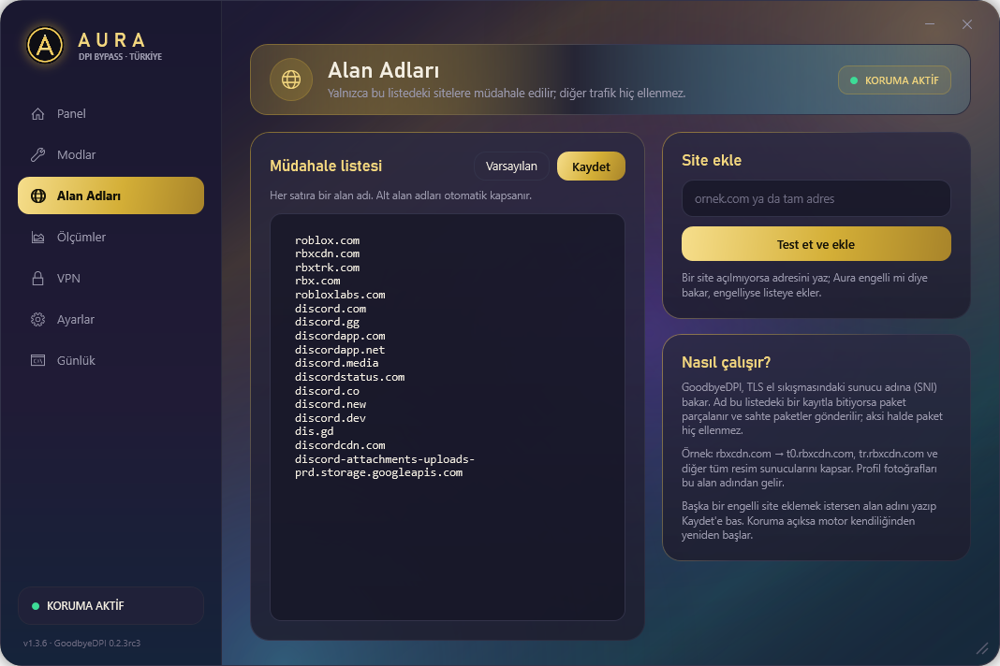

Roblox ve Discord'a takılmadan gir.
Aura tek tıkla engeli aşan bir Windows uygulaması. Profil resimleri ve oyun görselleri yüklenir, indirme hızın düşmez, ayarla uğraşmazsın.

Aç, bas, oyna.
Aura arka planda GoodbyeDPI motorunu yönetir. Hangi ayarın senin hattında çalıştığını kendisi bulur ve sorun çıkarsa kendisi toparlar.
Tek düğme
Güç düğmesine bas, koruma açılsın. İstersen Windows açılırken kendiliğinden başlar ve tepside sessizce durur.
Resimler yüklenir
Profil fotoğrafları ve oyun görselleri boş kalmaz. Aura, Roblox'un resim sunucularını çalışan adreslere yönlendirir.
Hızın düşmez
Yalnızca Roblox ve Discord adreslerine dokunur. Steam, YouTube ve tarayıcı indirmeleri tam hızda kalır.
Otomatik optimize
Yedi farklı modu senin hattında dener ve eksiksiz çalışan en hafifini seçer. Bir kez basman yeter.
Şifreli DNS
Adres sorgularını şifreleyerek gönderir. İnternet sağlayıcın okuyamaz ve sahte cevap veremez.
Servis durumu
11 Roblox ve Discord sunucusunu sürekli denetler. Hangisi açık, hangisi engelli, gecikmesi kaç, hepsini görürsün.
İsteğe bağlı VPN
Başka engelli siteler için Cloudflare WARP tüneli. Ücretsiz, hesap istemez, tek tıkla açılır ve kapanır.
Kendini günceller
Yeni sürüm çıkınca Aura haber verir ve tek tıkla kurar. Siteye tekrar gelmen gerekmez.
Üç adımda hazır.
Bir dakikadan kısa sürer. Kurulum programı eksik olan her şeyi kendisi indirir.
İndir ve çalıştır
AuraSetup.exe dosyasını indirip aç. Windows "bilinmeyen yayıncı" derse "Ek bilgi" ve ardından "Yine de çalıştır" de.
"Kur"a bas
Yönetici iznine "Evet" de. Aura kurulur, masaüstüne kısayolu gelir ve kendiliğinden açılır.
Oyna
Ekranda "KORUMA AKTİF" ve 11/11 görüyorsan hazırsın. İlk seferde bir kez "Otomatik Optimize"a basman iyi olur.
Aura.exe dosyasını çalıştırabilirsin. .NET 8 kuruluysa küçük paket de yeter.Sade ve şık.
Dört renk teması, Türkçe ve İngilizce arayüz, isteğe bağlı arayüz sesleri.


İndirme hızın yerinde kalır.
Aynı hat ve aynı sunucuyla ölçüldü: Türk Telekom, 24 Mbps, Cloudflare hız testi.
| Durum | Tek indirme | Çoklu indirme |
|---|---|---|
| Koruma kapalı | 24,6 Mbps | 24,1 Mbps |
| Klasik GoodbyeDPI (tüm trafik) | 4,7 Mbps | 12,2 Mbps |
| Aura | 24,7 Mbps | 24,3 Mbps |
Merak edilenler.
Ücretli mi?
Hayır. Aura ücretsizdir, hesap açmanı istemez ve reklam göstermez.
Aura bir VPN mi? IP adresimi gizler mi?
Hayır. Aura engeli aşar ama IP adresini değiştirmez, girdiğin site gerçek IP adresini görür. Bu yüzden oyunda gecikmen artmaz. IP adresinin değişmesini istersen uygulamanın içindeki VPN sayfasını kullanabilirsin.
Windows neden "bilinmeyen yayıncı" diyor?
Kurulum dosyası ücretli bir dijital imza taşımadığı için. "Ek bilgi" ve ardından "Yine de çalıştır" diyerek devam edebilirsin.
Hangi internet sağlayıcılarında çalışır?
Türk Telekom hattında geliştirildi ve ölçüldü. Diğer sağlayıcılarda "Otomatik Optimize" senin hattına uyan modu arar. Hiçbir mod çalışmazsa uygulama bunu açıkça söyler.
Aura'yı kapatınca internetim bozulur mu?
Hayır. Aura kapanırken yaptığı tüm ayarları geri alır. Bilgisayar aniden kapansa bile bir sonraki açılışta ayarlar kendiliğinden düzeltilir.
Bir sorun yaşarsam ne yapmalıyım?
Uygulamada Günlük sayfasındaki "Tanı raporu kopyala" düğmesine bas. Sistem, bağlantı ve son olaylar tek metin olarak kopyalanır, sorunu anlatırken onu da gönder.